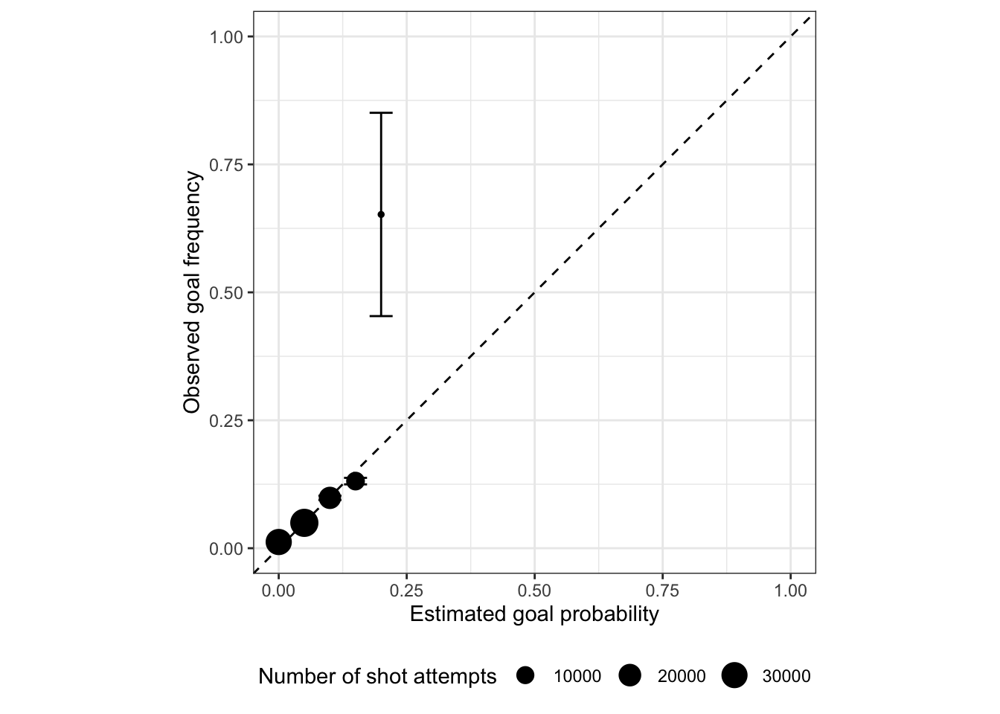
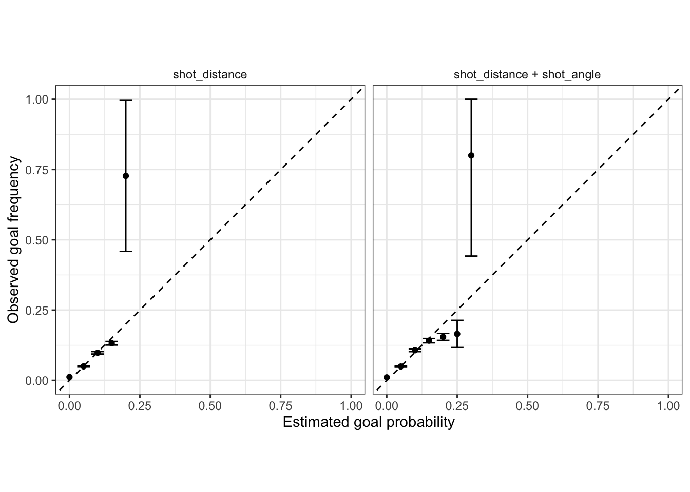

The goal of this demo is to walk through the process of evaluating logistic regression predicted probability estimates with calibration, as well as a demonstration of implementing cross-validation. In this demo, we’ll again use a dataset of NHL shot attempts during the 2023-2024 NHL season (accessed via hockeyR) to evaluate an expected goals model for hockey. The following code chunk reads in the data and displays a subset of the data:
# A tibble: 6 × 11
game_id period shooting_player shooting_team goalie_name goalie_team x_fixed
<dbl> <dbl> <chr> <chr> <chr> <chr> <dbl>
1 2.02e9 1 Bryan Rust Pittsburgh P… Petr Mrazek Chicago Bl… -51
2 2.02e9 1 Kevin Korchins… Chicago Blac… Tristan Ja… Pittsburgh… -55
3 2.02e9 1 Noel Acciari Pittsburgh P… Petr Mrazek Chicago Bl… 75
4 2.02e9 1 Wyatt Kaiser Chicago Blac… Tristan Ja… Pittsburgh… -39
5 2.02e9 1 Alex Vlasic Chicago Blac… Tristan Ja… Pittsburgh… -36
6 2.02e9 1 Marcus Petters… Pittsburgh P… Petr Mrazek Chicago Bl… 32
# ℹ 4 more variables: y_fixed <dbl>, shot_distance <dbl>, shot_angle <dbl>,
# is_goal <dbl>
Creating a calibration plot
We’ll start with the simple logistic regression model that is just a function of shot distance (shot_distance):
init_logit <-glm(is_goal ~ shot_distance, data = model_nhl_shot_data,family ="binomial")
Using this model, we can get the predicted probabilities for each shot using the predict() function but with type = "response" as an input (otherwise the logit values are returned):
# Add a column to the dataset with the predicted probabilities:model_nhl_shot_data <- model_nhl_shot_data |>mutate(pred_prob =predict(init_logit, newdata = model_nhl_shot_data,type ="response"))
We can now construct the calibration plot by binning the predicted probabilities followed by computing the proportion estimates and standard errors for each of the bins. There are a number of different ways to construct the bins, the following code represents just one way of doing this process using the round() function. For simplicity, we construct bins using increments of 0.05. There are several steps here so make sure you read through the code comments!
The following code chunk first creates a dataset with the relevant values for the calibration plot:
init_calibration_data <- model_nhl_shot_data |># First bin the pred probs in increments of 0.05mutate(bin_pred_prob =round(pred_prob /0.05) * .05) |># Group by bin_pred_prob:group_by(bin_pred_prob) |># Calculate the calibration results:summarize(n_shots =n(),# Observed proportionbin_actual_prob =mean(is_goal),# Compute the standard error based on the proportion and # shotsbin_se =sqrt((bin_actual_prob * (1- bin_actual_prob)) / n_shots),.groups ="drop") |># Cap the intervals to be within 0 and 1mutate(bin_upper =pmin(bin_actual_prob +2* bin_se, 1),bin_lower =pmax(bin_actual_prob -2* bin_se, 0))init_calibration_data
We can see fairly large differences in the number of shots across the bins, which leads much wider intervals. Using this dataset, we can now create a calibration plot where we include the y = x line as reference:
init_calibration_data |># Display pred probs along x and actual on yggplot(aes(x = bin_pred_prob, y = bin_actual_prob)) +# Display as points geom_point() +# Add error bars based on standard errors:geom_errorbar(aes(ymin = bin_lower, ymax = bin_upper)) +#geom_smooth(method = "loess", se = FALSE) +geom_abline(slope =1, intercept =0, color ="black", linetype ="dashed") +coord_equal() +scale_x_continuous(limits =c(0,1)) +scale_y_continuous(limits =c(0,1)) +labs(x ="Estimated goal probability",y ="Observed goal frequency") +theme_bw() +theme(legend.position ="bottom")
You may also see the number of observations in each bin mapped to the size of the points, but this is effectively already accounted for via the standard error intervals:
init_calibration_data |>ggplot(aes(x = bin_pred_prob, y = bin_actual_prob)) +# Display as points with number of shots mapped to sizegeom_point(aes(size = n_shots)) +geom_errorbar(aes(ymin = bin_lower, ymax = bin_upper)) +geom_abline(slope =1, intercept =0, color ="black", linetype ="dashed") +coord_equal() +scale_x_continuous(limits =c(0,1)) +scale_y_continuous(limits =c(0,1)) +labs(size ="Number of shot attempts",x ="Estimated goal probability",y ="Observed goal frequency") +theme_bw() +theme(legend.position ="bottom")

Cross-validation
As discussed in lecture, an expected goals model will likely be used to generate values for new shot attempts. This means we will need to take an existing model and generate predictions on new data. The alternative idea is to constantly refit the model after every single shot (or some determined batch) but that’s going to be computationally burdensome and tedious to manage. Instead, we should rely on evaluating the performance of our model based on out-of-sample performance. The most common way to do that is with \(K\)-fold cross-validation.
Because of the interesting structure of sports data, we can NOT randomly assign shots to folds. Instead, we must preserve the group structure and assign groups of observations together into the folds. For instance, in this example we will randomly assign games to folds thus ensuring that shots within the same game stay together. The following code chunk demonstrates how to first set-up a table containing only the game IDs, with 5-fold assignments and displays how many games are in each fold:
set.seed(1979)game_fold_table <-tibble(game_id =unique(model_nhl_shot_data$game_id)) |>mutate(game_fold =sample(rep(1:5, length.out =n()), n()))# See how many games are in each fold:table(game_fold_table$game_fold)
1 2 3 4 5
280 280 280 280 280
Next, we need to join the fold ids to the modeling data, so that each shot is assigned to a fold based on the game assignment:
model_nhl_shot_data <- model_nhl_shot_data |>left_join(game_fold_table, by ="game_id")# See how many shots are in each fold:table(model_nhl_shot_data$game_fold)
1 2 3 4 5
19521 19754 19432 19434 19493
And finally, we can generate the holdout predictions for every shot attempt by iterating through each game fold. The following code chunk represents one way of generating the cross-validation predictions, but effectively it is just looping through the test folds, fitting the model on the training data, and storing the predictions for the test data:
logit_cv_preds <-map_dfr(unique(model_nhl_shot_data$game_fold), function(test_fold) {# Separate test and training data: test_data <- model_nhl_shot_data |>filter(game_fold == test_fold) train_data <- model_nhl_shot_data |>filter(game_fold != test_fold)# Train model: logit_model <-glm(is_goal ~ shot_distance, data = train_data, family ="binomial")# Return tibble of holdout results:tibble(test_pred_probs =predict(logit_model, newdata = test_data,type ="response"),test_actual = test_data$is_goal,game_fold = test_fold) })
You’ll notice that the logit_cv_preds dataset has the same number of rows as the original model dataset. This is because every observation receives a holdout prediction in cross-validation.
With the cross-validation predictions, we can now create a hold-out calibration plot using the same steps as before:
NOTE: As discussed in lecture, this is slightly different than the usual cross-validation procedure of generating an estimate for a loss (or any objective function) across \(K\)-folds (e.g., \(K = 5\) estimates of RMSE), then averaging over the \(K\)-fold values to generate an estimate of the test loss with standard errors. The reason for this, is because the calibration plot itself is our desired quantity (one could hypothetically compute \(K\) estimates for each bin instead).
We can use cross-validation to compare and evaluate which set of features are more appropriate. For instance, the following code check generates the cross-validation predictions when using shot distance AND angle:
angle_cv_preds <-map_dfr(unique(model_nhl_shot_data$game_fold), function(test_fold) {# Separate test and training data: test_data <- model_nhl_shot_data |>filter(game_fold == test_fold) train_data <- model_nhl_shot_data |>filter(game_fold != test_fold)# Train model: logit_model <-glm(is_goal ~ shot_distance + shot_angle, data = train_data, family ="binomial")# Return tibble of holdout results:tibble(test_pred_probs =predict(logit_model, newdata = test_data,type ="response"),test_actual = test_data$is_goal,game_fold = test_fold) })
We can then stack the two datasets of predictions together, with a new column denoting what variables are in included, and then generate side-by-side calibration plots for comparison:
logit_cv_preds |>mutate(features ="shot_distance") |>bind_rows(mutate(angle_cv_preds, features ="shot_distance + shot_angle")) |>mutate(bin_pred_prob =round(test_pred_probs /0.05) * .05) |># Group by features AND bin_pred_prob:group_by(features, bin_pred_prob) |># Calculate the calibration results:summarize(n_shots =n(),bin_actual_prob =mean(test_actual),bin_se =sqrt((bin_actual_prob * (1- bin_actual_prob)) / n_shots),.groups ="drop") |>mutate(bin_upper =pmin(bin_actual_prob +2* bin_se, 1),bin_lower =pmax(bin_actual_prob -2* bin_se, 0)) |>ggplot(aes(x = bin_pred_prob, y = bin_actual_prob)) +geom_point() +geom_errorbar(aes(ymin = bin_lower, ymax = bin_upper)) +geom_abline(slope =1, intercept =0, color ="black", linetype ="dashed") +# Facet by the features:facet_wrap(~features, ncol =2) +coord_equal() +scale_x_continuous(limits =c(0,1)) +scale_y_continuous(limits =c(0,1)) +labs(x ="Estimated goal probability",y ="Observed goal frequency") +theme_bw() +theme(legend.position ="bottom",strip.background =element_blank())

Between these two model options, which do you think is better?
Recap
Introduced using calibration for evaluating logistic regression probability estimates
Walked through steps for performing cross-validation while accounting for unique data structure